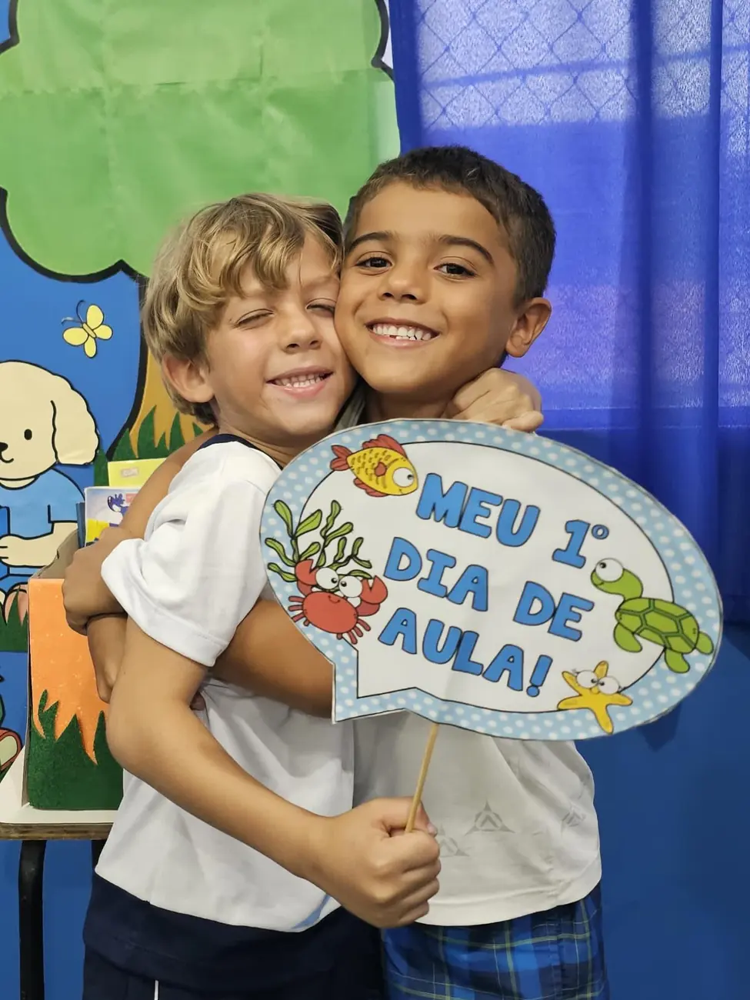

Curiosidade, autonomia e as primeiras descobertas.
- Experiências planejadas que estimulam a curiosidade e a criatividade
- Autonomia, cooperação e convivência desde cedo
- Educação Física e atividades artísticas na rotina
- Projeto Bilíngue a partir do Grupo 4, com a International School